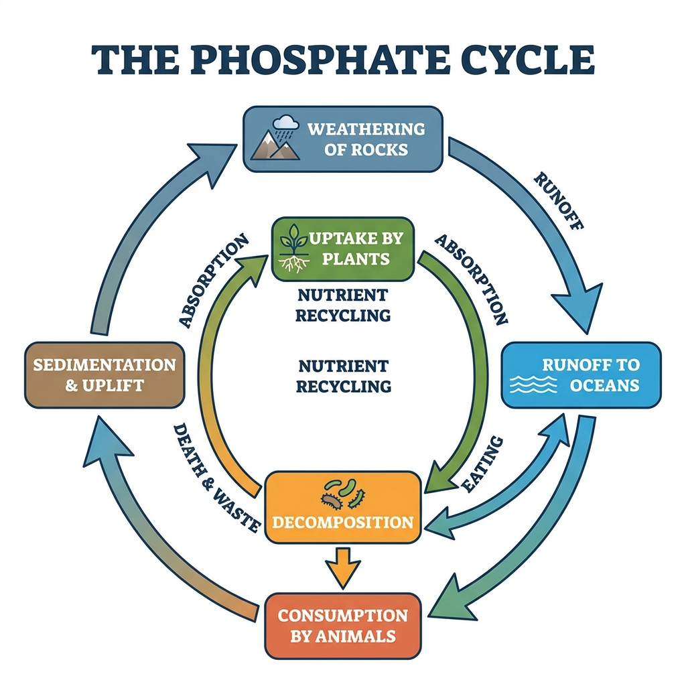
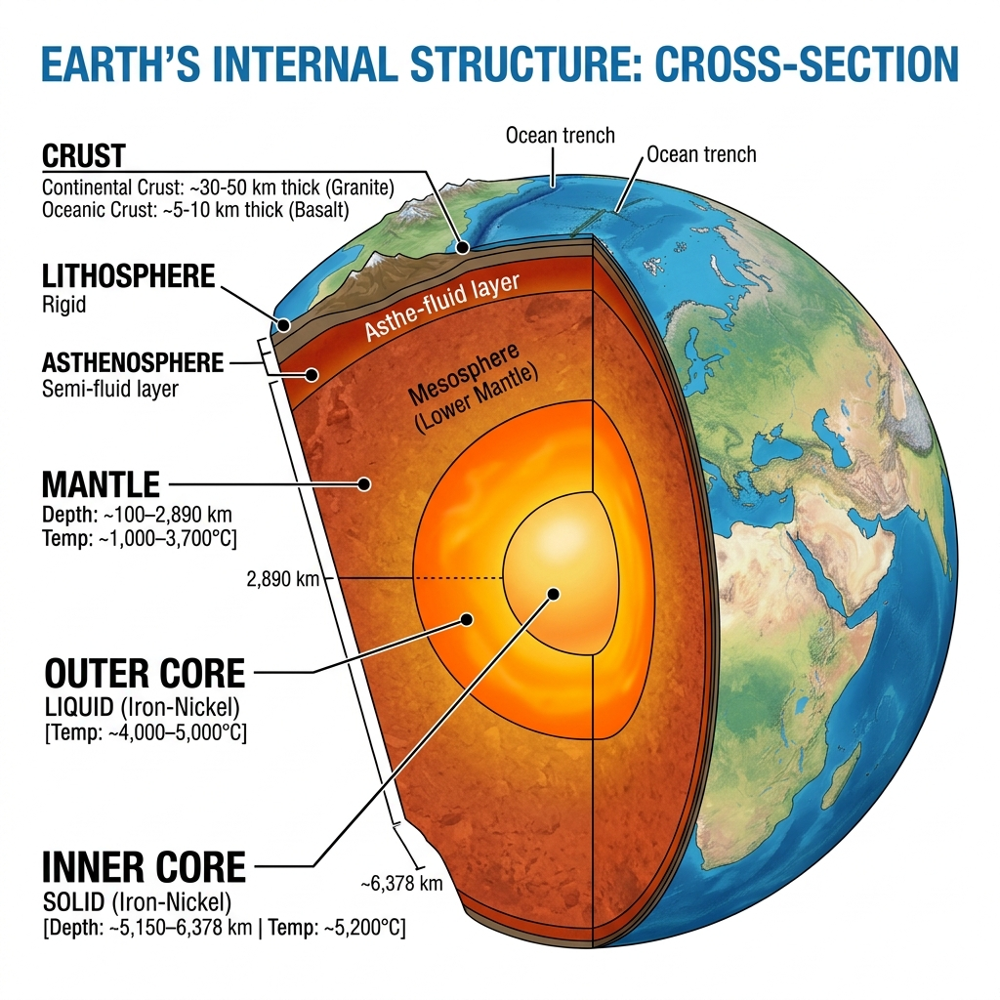
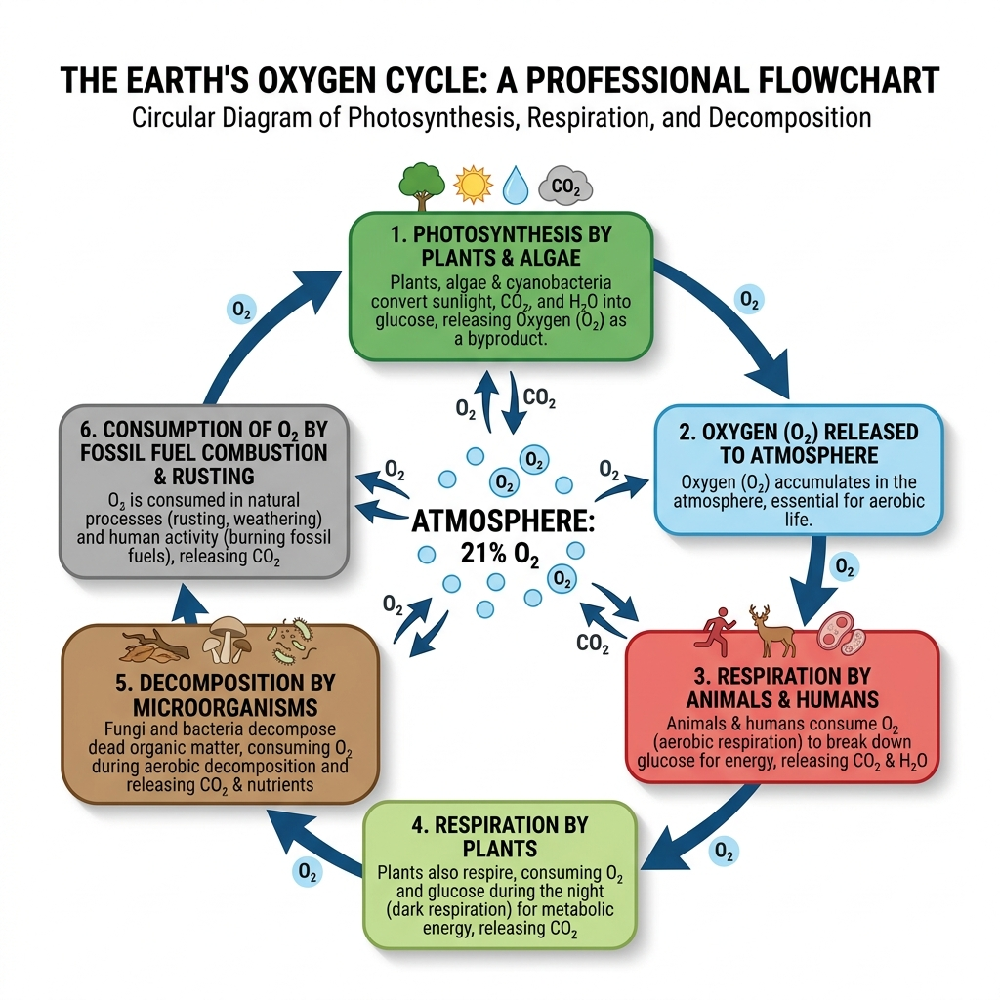
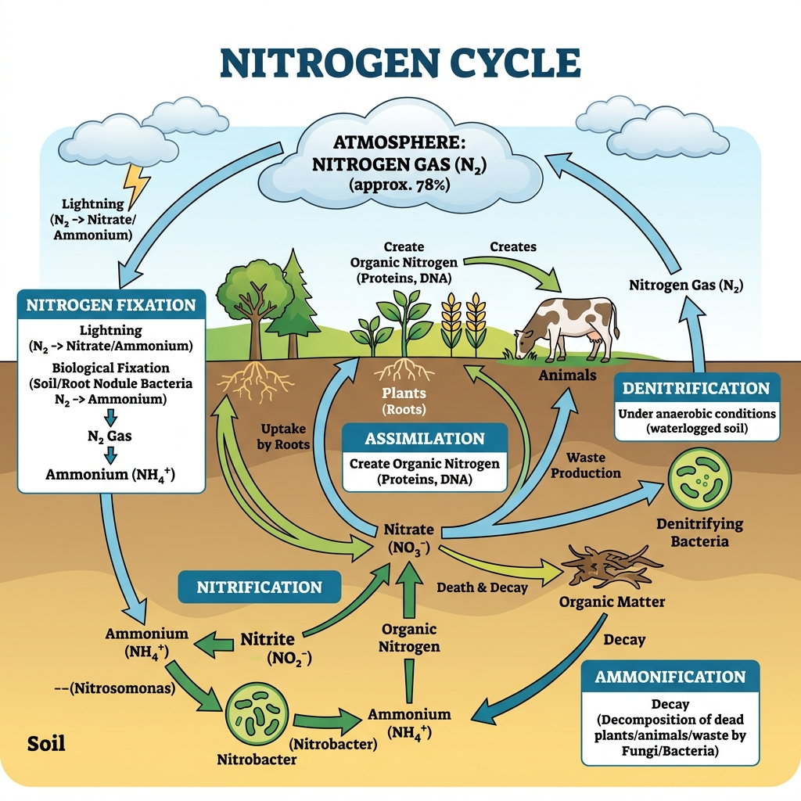
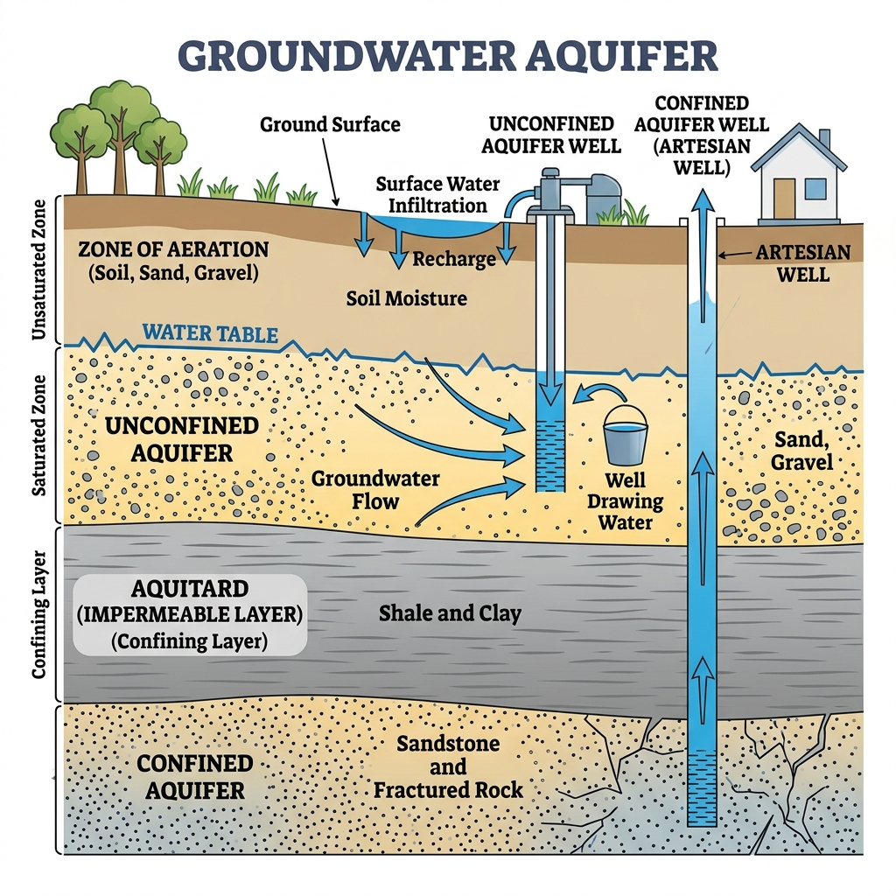
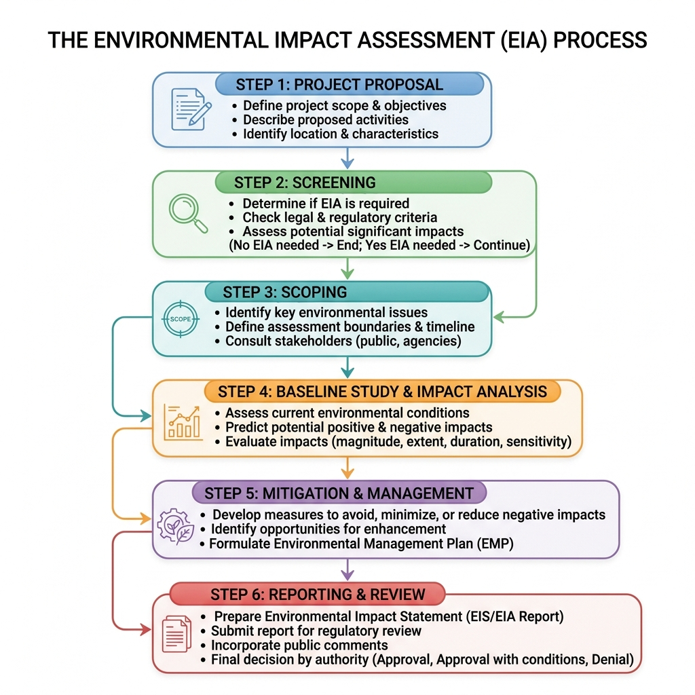

Consolidated PYQs & Most Probable Important Questions
1. What is meant by ecosystem?
An ecosystem is a self-regulating biological community of interacting organisms (biotic components) and their physical environment (abiotic components) functioning together as a system.
2. Define population growth.
Population growth is the change (usually an increase) in the number of individuals of a specific species in a given population over a specific period of time.
3. What is biodiversity?
Biodiversity refers to the variety and variability of life on Earth. It encompasses diversity at the genetic level, species level, and ecosystem level.
4. Name any two renewable energy resources.
1. Solar Energy
2. Wind Energy
5. What is carrying capacity in logistic population growth?
The carrying capacity (K) is the maximum population size of a biological species that a specific environment can sustain indefinitely, given the available resources like food, habitat, and water.
6. Define food chain.
A food chain is a linear sequence of organisms through which nutrients and energy pass in an ecosystem as one organism eats another (e.g., Grass → Grasshopper → Frog → Snake).
7. What is COD?
COD (Chemical Oxygen Demand) is a measure of the total amount of oxygen required to chemically oxidize all organic and inorganic matter present in a water sample using a strong chemical oxidant.
8. Define BOD.
BOD (Biochemical Oxygen Demand) is the amount of dissolved oxygen needed by aerobic biological organisms to break down the organic material present in a given water sample at a certain temperature over a specific time period.
9. Mention any one source of air pollution.
Vehicular emissions (exhaust from cars and trucks containing CO, NOx, and particulate matter).
10. What is global warming?
Global warming is the long-term heating of Earth's climate system observed primarily due to human activities (like burning fossil fuels), which increases heat-trapping greenhouse gas levels in Earth's atmosphere.
11. What is noise pollution?
Noise pollution is unwanted or excessive sound that can have deleterious effects on human health, wildlife, and environmental quality.
12. What is meant by biotic component of ecosystem?
The biotic components are all the living parts of an ecosystem that shape its environment, including producers (plants), consumers (animals), and decomposers (bacteria/fungi).
13. Name the pollutant responsible for ozone depletion.
Chlorofluorocarbons (CFCs).
14. What is equivalent noise level?
Equivalent continuous noise level (Leq) is the constant noise level that would result in the same total sound energy being produced as the actual fluctuating noise level over a given period of time.
15. What is eutrophication?
Eutrophication is the process by which a water body becomes progressively enriched with minerals and nutrients (particularly nitrogen and phosphorus), leading to excessive growth of algae (algal blooms) and subsequent depletion of oxygen.
16. What is meant by solid waste?
Solid waste refers to any discarded, rejected, abandoned, or otherwise unwanted solid materials resulting from industrial, commercial, mining, agricultural operations, and from community activities.
17. What is meant by environmental impact assessment (EIA)?
An EIA is a formal, scientific process used to predict and evaluate the environmental consequences (both positive and negative) of a proposed plan, policy, or project prior to the decision to move forward with it.
18. What is doubling time in exponential population growth?
Doubling time is the period of time required for a population growing at a constant exponential rate to double in size or value. It is calculated as approximately 70 / r (where r is the annual growth rate percentage).
19. Why was the Environmental Protection Act established?
The Environmental Protection Act (EPA, 1986 in India) was established to provide a comprehensive framework for the protection and improvement of the environment, largely enacted in response to the devastating Bhopal gas tragedy.
20. What is meant by renewable resource?
A renewable resource is a natural resource that will replenish itself to replace the portion depleted by usage and consumption, either through natural reproduction or other recurring processes in a finite amount of time.
21. Define logistic population growth.
Logistic population growth is a model of population growth where the initial rapid growth rate slows down and eventually levels off as the population reaches the carrying capacity of the environment, resulting in an S-shaped (sigmoidal) curve.
1. (I) What do you mean by Abiotic component of ecosystem?
Abiotic components are the non-living chemical and physical parts of the environment that affect living organisms and the functioning of ecosystems. These include factors like sunlight, temperature, wind, water, soil, atmospheric gases, and minerals.
1. (II) Define the term Lithosphere.
The Lithosphere is the solid, outer part of the Earth. It includes the brittle upper portion of the mantle and the crust, serving as the foundation for terrestrial ecosystems and providing essential minerals to living organisms.
1. (III) Define the term hydrosphere.
The Hydrosphere is the combined mass of water found on, under, and above the surface of a planet. It encompasses all oceans, lakes, rivers, groundwater, atmospheric water vapor, and glaciers.
1. (IV) What do you mean by soil pollution?
Soil pollution (or soil contamination) refers to the presence of toxic chemicals, pollutants, or contaminants in the soil in high enough concentrations to pose a risk to human health and the ecosystem, often resulting from industrial activity, agricultural chemicals, or improper waste disposal.
1. (V) What is the unit of measurement of sound?
The primary unit of measurement for sound level or intensity is the Decibel (dB).
1. (VI) The Environment (Protection) Act was enacted in which year?
The Environment (Protection) Act was enacted in India in the year 1986.
1. (VII) What do you mean by anthropogenic waste?
Anthropogenic waste refers to waste and pollutants generated specifically by human activities, such as industrial emissions, household garbage, agricultural runoff, and plastic waste, as opposed to naturally occurring waste.
1. (VIII) What are the major types of ecosystem?
The major types of ecosystems are broadly categorized into Terrestrial Ecosystems (forest, grassland, desert, tundra) and Aquatic Ecosystems (freshwater like lakes/rivers, and marine like oceans/coral reefs).
1. (IX) What is greenhouse effect?
The greenhouse effect is the natural process by which certain gases in the Earth's atmosphere (like CO₂, methane, and water vapor) trap heat from the sun, preventing it from escaping back into space and thereby warming the planet to sustain life.
1. (X) Define the term COD.
COD (Chemical Oxygen Demand) is a measure of the total amount of oxygen required to chemically oxidize all organic and inorganic reactive substances in a water sample. It is a vital metric for determining the amount of pollution in water.
1. (XI) What is acid rain?
Acid rain is any form of precipitation (rain, snow, fog) that is unusually acidic (has an elevated level of hydrogen ions, low pH). It is primarily caused by emissions of sulfur dioxide (SO₂) and nitrogen oxides (NOx) reacting with water molecules in the atmosphere.
1. (XII) Who developed the concept of ecological pyramid?
The concept of the ecological pyramid was first developed by the British ecologist Charles Elton in 1927, which is why it is also often referred to as an Eltonian pyramid.
1. (I) What are causes of acid rain and what is its effects on natural environment?
Causes: Emissions of sulfur dioxide (SO₂) and nitrogen oxides (NOx) from burning fossil fuels (vehicles, power plants) which react with water vapor in the atmosphere to form sulfuric and nitric acids.
Effects: It lowers the pH of soil and water bodies, harming aquatic life, damaging forests and vegetation, and accelerating the decay of building materials and historical monuments.
1. (II) What do you understand by GCM?
GCM (General Circulation Model or Global Climate Model) is a complex mathematical representation of the major climate system components (atmosphere, land surface, ocean, and sea ice) and their interactions. It is used to simulate global weather and predict future climate changes.
1. (III) What are In-situ and Ex-situ conservation method of biodiversity?
In-situ (on-site) conservation: Protecting an endangered plant or animal species in its natural habitat (e.g., National Parks, Wildlife Sanctuaries).
Ex-situ (off-site) conservation: Protecting species outside their natural habitats in controlled environments (e.g., Zoos, Botanical Gardens, Seed Banks).
1. (IV) Graphically explain the relationship between BOD and DO.
When organic pollution enters a river, Biochemical Oxygen Demand (BOD) spikes as bacteria multiply to consume the waste. As they consume the waste, they deplete the oxygen, causing Dissolved Oxygen (DO) to drop sharply, creating an "oxygen sag curve." As the waste is broken down over time and distance, BOD slowly decreases, allowing DO to recover back to normal levels.
1. (V) What are the various sources of water pollution?
Major sources include: Industrial effluents (heavy metals, chemicals), agricultural runoff (fertilizers, pesticides causing eutrophication), domestic sewage (untreated wastewater), and oil spills.
1. (VI) Mention name of few gases generated from Incineration plant.
Gases typically generated include Carbon Dioxide (CO₂), Water Vapor (H₂O), Carbon Monoxide (CO), Sulfur Dioxide (SO₂), Nitrogen Oxides (NOx), Hydrogen Chloride (HCl), and highly toxic Dioxins and Furans.
1. (VII) Mention various types of noise pollution and its effects on human being.
Types: Transport noise (traffic, aircraft), Industrial noise, Neighborhood noise (loudspeakers, construction).
Effects: Hearing impairment/loss, sleep disturbance, cardiovascular issues (hypertension), stress, and decreased cognitive performance.
1. (VIII) What authorizes the Central Government of India in Environmental Protection Act, 1986?
The Act authorizes the Central Government to take all necessary measures to protect and improve the quality of the environment, establish environmental standards, regulate industrial locations, and lay down procedures/safeguards for handling hazardous substances.
1. (IX) What are the various types of earthquake waves generated in the earth surface?
There are two main types: Body Waves (P-waves or Primary waves which are fast compressional waves, and S-waves or Secondary waves which are slower shear waves) and Surface Waves (Love waves and Rayleigh waves) which travel along the Earth's surface and cause the most damage.
1. (X) Mention the types and function of various components of ecosystem.
Abiotic Components: Physical factors (sunlight, soil, water) that provide the foundation and nutrients.
Biotic Components: Producers (make food), Consumers (eat others for energy), and Decomposers (break down dead matter, recycling nutrients back into the ecosystem).
1. (XI) Mention the various elements of air pollution as per NAAQS.
The National Ambient Air Quality Standards (NAAQS) primarily monitor: Particulate Matter (PM10 and PM2.5), Sulfur Dioxide (SO₂), Nitrogen Dioxide (NO₂), Carbon Monoxide (CO), Ozone (O₃), Lead (Pb), Ammonia (NH₃), and Benzene.
1. (XII) What is meant by 5-day BOD and Ultimate BOD?
5-day BOD (BOD₅): The amount of dissolved oxygen consumed by microorganisms to decompose organic matter over a standard 5-day period at 20°C.
Ultimate BOD (BODᵤ): The total amount of oxygen required for the complete microbial breakdown of organic matter in a water sample over an infinite period.
1. (I) Define the term Environment.
Environment refers to the sum total of all physical, chemical, biological, and social factors that surround an organism or a population and influence its survival, growth, and development.
1. (II) What is noise pollution?
Noise pollution is the presence of excessive, unwanted, or disturbing sound in the environment that disrupts the normal activities, health, or quality of life of humans and animals.
1. (III) Give two example of renewable resource.
Two examples of renewable resources are Solar energy and Wind energy (other examples include timber, geothermal energy, and biomass).
1. (IV) Name the pollutant which is responsible for ozone depletion.
The primary pollutants responsible for ozone depletion are Chlorofluorocarbons (CFCs).
1. (V) What do you mean by Biotic component of ecosystem?
Biotic components are the living parts of an ecosystem, which include all plants (producers), animals (consumers), and microorganisms (decomposers) that interact with each other and their environment.
1. (VI) What is the percentage of oxygen present in the troposphere?
Oxygen makes up approximately 20.9% (or 21%) of the Earth's troposphere.
1. (VII) Define the term BOD.
BOD (Biochemical Oxygen Demand) is the amount of dissolved oxygen consumed by aerobic microorganisms to break down the organic matter present in a given water sample at a specific temperature over a specific time period (usually 5 days).
1. (VIII) What is the major element found in earth crust?
The most abundant element in the Earth's crust is Oxygen (making up about 46.6% by weight).
1. (IX) What is equivalent noise level?
Equivalent continuous noise level (Leq) is the constant noise level that would result in the same total sound energy being produced over a given period as a fluctuating noise level over that same period.
1. (X) Why environmental protection act was established?
The Environmental Protection Act (1986 in India) was established in the wake of the Bhopal Gas Tragedy to provide a unified framework for the protection and improvement of the environment, and to regulate hazardous substances and industrial pollution.
1. (XI) What do you mean by doubling time in exponential population growth?
Doubling time is the amount of time it takes for a given population to double in size, assuming its growth rate remains constant (calculated using the Rule of 70: Doubling Time = 70 / Growth Rate % ).
1. (XII) The term 'ecology' evolved from which Greek words?
The term ecology comes from the Greek words "oikos" (meaning house or dwelling) and "logos" (meaning study of), literally translating to the "study of the household (nature)."
1. Derive the mathematical equation for exponential population growth.
The exponential growth model assumes that resources are unlimited. The rate of change of the population (dN/dt) is proportional to the current population size (N).
1. Differential Equation:
$$\frac{dN}{dt} = rN$$
Where:
N = Population size
t = Time
r = Intrinsic rate of natural increase (birth rate - death rate)
2. Separation of Variables:
$$\frac{dN}{N} = r dt$$
3. Integration:
Integrate both sides from time $t = 0$ (initial population $N_0$) to time $t$ (population $N_t$):
$$\int \frac{1}{N} dN = \int r dt$$
$$\ln(N_t) - \ln(N_0) = rt$$
$$\ln\left(\frac{N_t}{N_0}\right) = rt$$
4. Final Exponential Form:
Take the exponential (e) of both sides:
$$N_t = N_0 e^{rt}$$
This is the classic exponential growth equation showing a J-shaped curve.
2. Explain logistic population growth with carrying capacity.
Unlike exponential growth, logistic growth accounts for environmental resistance. Resources are limited, so a population cannot grow indefinitely.
Carrying Capacity (K): This is the maximum number of individuals of a species that an environment can support over a long period without degrading the environment.
The Logistic Equation:
$$\frac{dN}{dt} = rN \left( \frac{K - N}{K} \right)$$
How it works (The S-Shaped Curve):
3. Describe the causes and effects of water pollution.
Causes of Water Pollution:
Effects of Water Pollution:
4. What are the advantages and disadvantages of landfilling of solid waste?
A sanitary landfill is an engineered pit where solid waste is dumped, compacted, and covered with soil daily.
Advantages:
Disadvantages:
5. Describe different methods of solid waste management.
Effective solid waste management uses a hierarchy of methods to minimize environmental impact:
6. Explain the concept and objectives of Environmental Impact Assessment (EIA).
Concept:
Environmental Impact Assessment (EIA) is a formal, proactive regulatory process used to evaluate the potential environmental, social, and economic impacts of a proposed project (e.g., building a dam, highway, or factory) before the project is granted approval to proceed.
Objectives of EIA:
7. Differentiate between BOD, COD, and DO.
| Feature | BOD (Biochemical Oxygen Demand) | COD (Chemical Oxygen Demand) | DO (Dissolved Oxygen) |
|---|---|---|---|
| Definition | Amount of oxygen consumed by bacteria to decompose organic matter biologically. | Amount of oxygen required to chemically oxidize all organic and inorganic matter. | The actual amount of free, non-compound oxygen molecules (O₂) present in the water. |
| Time Required | Takes 5 days to measure (BOD₅). | Takes only 2-3 hours to measure. | Measured instantly using a probe or titration. |
| Value Relationship | Always lower than COD. High BOD means high pollution. | Always higher than BOD. High COD means high pollution. | Inversely related to BOD/COD. High DO means clean, healthy water. |
8. Discuss the principle of BOD test.
Principle of the BOD (Biochemical Oxygen Demand) Test:
The BOD test measures the rate at which microorganisms consume oxygen while breaking down organic matter in a water sample. It is a standard bioassay used to determine the level of organic pollution in water.
Procedure:
Formula: $$BOD_5 (mg/L) = \frac{D_1 - D_5}{P}$$
Where $P$ is the decimal fraction of the sample in the bottle. A high BOD value indicates high organic pollution.
9. Write a brief note on eutrophication.
Eutrophication is an ecological process resulting from the over-enrichment of a water body (like a lake or river) with minerals and nutrients, primarily nitrogen and phosphorus.
Process:
Eutrophication can be natural (occurring slowly over centuries) or cultural (accelerated rapidly by human pollution).
10. Describe different kinds of solid waste.
Solid waste is categorized based on its source and characteristics:
11. If the present population of the world is 8 billion, calculate the population after 25 years at a growth rate of 1% per year.
We use the exponential growth formula: $N_t = N_0(1 + r)^t$ or the continuous compound formula $N_t = N_0 e^{rt}$.
Given:
Initial population ($N_0$) = 8 billion
Growth rate ($r$) = 1% = 0.01
Time ($t$) = 25 years
Using the continuous exponential model:
$$N_t = 8 \times e^{(0.01 \times 25)}$$
$$N_t = 8 \times e^{0.25}$$
Using the value of $e^{0.25} \approx 1.2840$
$$N_t = 8 \times 1.2840 = 10.272 \text{ billion}$$
(Using the discrete annual compounding formula $N_t = 8(1.01)^{25}$, the result is $8 \times 1.2824 = 10.259$ billion).
Answer: The population will be approximately 10.27 billion.
12. Explain the role of decomposers in ecosystem functioning.
Decomposers (primarily bacteria and fungi) act as the ecosystem's recycling crew. Their role is absolutely critical for the continuation of life:
13. Discuss the structure and functions of an ecosystem.
Structure of an Ecosystem:
The structure is composed of two main interactive components:
Functions of an Ecosystem:
The functions describe the dynamic processes and interactions within the structure:
2. Discuss about the phosphate cycle with diagram.
The Phosphorus Cycle (Phosphate Cycle) is the biogeochemical process by which phosphorus moves through the lithosphere, hydrosphere, and biosphere. Unlike the carbon or nitrogen cycles, it does not involve the atmosphere significantly, as phosphorus is primarily found in solid rocks and soil minerals.
Flowchart Representation:

3. Write a short note about green house effect.
The Greenhouse Effect is a natural phenomenon crucial for keeping the Earth warm enough to sustain life.
Mechanism: Solar radiation passes through the atmosphere and warms the Earth's surface. The Earth then radiates heat back outward as infrared radiation. Certain gases in the atmosphere, known as greenhouse gases (GHGs), absorb a portion of this outgoing infrared radiation, trapping heat and radiating it back to the surface.
Major Greenhouse Gases:
Impact: While the natural greenhouse effect is beneficial, human activities have artificially amplified it by increasing GHG concentrations. This enhanced greenhouse effect is the primary driver of global warming and rapid climate change.
4. Write a short note about different types of human environment interaction.
Human-Environment Interaction studies how humans adapt to, depend on, and modify their natural surroundings. The three primary types of interaction are:
5. Write a brief note about ecological pyramid.
An Ecological Pyramid is a graphical representation designed to show the biomass, bioproductivity, or energy flow at each trophic level in a given ecosystem.
Types of Ecological Pyramids:
6. Write a brief note about standard control and measures for the control of air pollution.
Controlling air pollution requires a combination of technological, regulatory, and personal measures:
1. Technological Measures (At the Source):
2. Regulatory Measures:
3. Biological & Personal Measures:
2. (i) Explain with neat diagram the internal structure of the Earth. (ii) What do you mean by rock cycle?
(i) Internal Structure of the Earth:
The Earth is composed of three main concentric layers:
Diagrammatic Representation:

(ii) Rock Cycle:
The Rock Cycle is a continuous, geological process by which rocks are created, changed from one form to another, and destroyed over millions of years. The three main rock types are Igneous, Sedimentary, and Metamorphic.
3. (i) What do you mean by maximum mixing depth? (ii) Differentiate between Ambient lapse rate and Adiabatic lapse rate.
(i) Maximum Mixing Depth (MMD):
Maximum Mixing Depth refers to the maximum vertical height or thickness of the atmospheric layer near the ground within which air pollutants and heat can be vigorously mixed and dispersed by convection and turbulence. A higher mixing depth means better dispersion of pollutants, leading to better air quality.
(ii) Difference between Ambient Lapse Rate and Adiabatic Lapse Rate:
| Feature | Ambient (Environmental) Lapse Rate (ALR) | Adiabatic Lapse Rate |
|---|---|---|
| Definition | The actual, measured rate at which the air temperature changes with altitude at a specific time and place. | The theoretical rate at which a parcel of air cools or warms as it moves vertically, without exchanging heat with its surroundings. |
| Value | Highly variable depending on weather, time of day, and location. Average is ~6.5°C per km. | Constant for a given state: Dry Adiabatic Lapse Rate (DALR) is ~9.8°C/km. Wet/Saturated (SALR) is ~5-6°C/km. |
| Purpose | Describes the state of the surrounding atmosphere. | Describes what happens to a specific moving parcel of air. (Comparing ALR to Adiabatic determines atmospheric stability). |
4. (i) Define flood and how can it be mitigated and controlled? (ii) What do you understand by anthropogenic environmental degradation?
(i) Flood and Mitigation:
A flood is an overflow of water onto land that is normally dry. It often happens during heavy rainfall, rapid snowmelt, or when a river bursts its banks or a dam fails.
Control and Mitigation:
(ii) Anthropogenic Environmental Degradation:
This refers to the deterioration of the environment (air, water, soil, ecosystems) caused specifically by human activities. Unlike natural degradation (like volcanic eruptions), anthropogenic degradation includes deforestation, industrial pollution, over-mining, carbon emissions causing global warming, and plastic waste accumulation. It disrupts ecological balance and threatens biodiversity.
5. (i) Write the equation for population growth and explain the notations. (ii) How to calculate "Natural Increase Rate"?
(i) Population Growth Equation:
The standard equation for population growth over a given time period is:
P(t) = P(0) + (B - D) + (I - E)
Notations:
(ii) Natural Increase Rate (NIR):
The Natural Increase Rate measures the growth of a population excluding migration. It is calculated by subtracting the crude death rate from the crude birth rate.
Formula: NIR = (Crude Birth Rate - Crude Death Rate) / 10
Note: The rate is typically expressed as a percentage. Crude rates are usually given per 1,000 people, hence the division by 10 to get a percentage.
6. (i) How arsenic get dissolved in groundwater in the aquifer system? (iii) How many districts in West Bengal are exposed to groundwater arsenic contamination?
(i) Dissolution of Arsenic in Groundwater:
Arsenic contamination in groundwater is primarily a natural, geological phenomenon. The arsenic is naturally present in the aquifer sediments, often bound to iron oxide or hydroxide minerals.
Under specific geochemical conditions—such as highly reducing (anaerobic) conditions often caused by the decomposition of buried organic matter—the iron oxides dissolve. When the iron minerals break down, the arsenic bound to them is released and mobilized, dissolving into the groundwater.
(iii) Affected Districts in West Bengal:
West Bengal is one of the most severely affected regions globally. Out of 23 districts in West Bengal, currently 9 to 12 districts (depending on recent surveys) are highly exposed to severe groundwater arsenic contamination (levels above the WHO guideline of 10 ppb). Severely affected districts include Malda, Murshidabad, Nadia, North 24 Parganas, and South 24 Parganas.
2. Write a brief note about noise pollution.
Noise Pollution:
Noise pollution is defined as unwanted or excessive sound that can have deleterious effects on human health, wildlife, and environmental quality.
3. Write a short note about water pollution.
Water Pollution:
Water pollution is the contamination of water bodies (lakes, rivers, oceans, aquifers) due to human activities, making the water toxic to humans or the environment.
4. Write brief note about solid waste management and control.
Solid Waste Management:
This is the systematic process of collecting, treating, and disposing of solid material that is discarded because it has served its purpose or is no longer useful.
Key Steps & Control Measures:
5. Write a brief note about noise pollution control measurement.
Noise Pollution Control Measures:
Controlling noise pollution can be tackled at three levels:
6. Write a brief note about different kinds of solid waste.
Solid wastes can be broadly classified based on their origin and characteristics:
7. (a) What do you mean by Ecosystem? (b) What are the component of Ecosystem? (c) Write down the oxygen cycle with diagram.
(a) Ecosystem: An ecosystem is a geographic area where plants, animals, and other organisms, as well as weather and landscape, work together to form a bubble of life. It is the basic functional unit of ecology, emphasizing the interaction between living organisms (biotic) and their physical environment (abiotic).
(b) Components of Ecosystem:
(c) Oxygen Cycle: The oxygen cycle is the biogeochemical cycle of oxygen within its three main reservoirs: the atmosphere, the biosphere, and the lithosphere.
Flowchart Diagram:

8. (a) What is global warming? (b) How do greenhouse gases cause global warming? (c) What are the adverse effects of global warming?
(a) Global Warming: It refers to the long-term, continuous rise in the average temperature of the Earth's climate system, primarily driven by human activities, especially the emission of greenhouse gases since the pre-industrial period.
(b) How Greenhouse Gases cause Global Warming:
The sun emits shortwave radiation that passes easily through the Earth's atmosphere and warms the surface. The warmed Earth radiates this energy back out as longwave (infrared) thermal radiation. Greenhouse gases (like CO₂, Methane, and N₂O) are largely transparent to shortwave sunlight but highly opaque to longwave infrared radiation. These gases absorb the outgoing infrared radiation and re-radiate it in all directions, including back toward the surface. By artificially increasing the concentration of these gases through burning fossil fuels and deforestation, humans have thickened this "thermal blanket," trapping excess heat and causing the global temperature to rise.
(c) Adverse Effects of Global Warming:
9. a. Write a brief note about sustainable development. b. Define the terms: Total Fertility Rate, Total Mortality Rate, and Age Pyramid.
(a) Sustainable Development:
Sustainable development is defined as "development that meets the needs of the present without compromising the ability of future generations to meet their own needs." It aims to achieve a balance between economic growth, environmental protection, and social equity. Key principles include minimizing the depletion of non-renewable resources, utilizing renewable resources within their capacity for regeneration, preventing pollution, and ensuring fair distribution of resources among all people.
(b) Definitions:
10. (a) What is biogeochemical cycle? (b) Discuss about the carbon and nitrogen cycle with diagram.
(a) Biogeochemical Cycle:
A biogeochemical cycle is the pathway by which a chemical substance cycles the biotic and the abiotic compartments of Earth. "Bio" refers to living organisms, "geo" refers to rocks, soil, air, and water, and "chemical" implies the chemical processes involved. These cycles ensure that essential elements like Carbon, Nitrogen, and Phosphorus are continuously recycled in nature.
(b) Carbon Cycle: The movement of carbon through the biosphere, atmosphere, oceans, and geosphere.
Nitrogen Cycle: The complex process of nitrogen conversion.
(Flowchart representations can be drawn showing these distinct steps flowing in a cycle).
11. What is dissolve oxygen? What is its importance as water quality parameter?
Dissolved Oxygen (DO):
Dissolved Oxygen refers to the level of free, non-compound oxygen present in water or other liquids. It is an important parameter in assessing water quality because of its influence on the organisms living within a body of water. Oxygen enters the water through direct absorption from the atmosphere, rapid movement (like in rapids or waterfalls), and as a byproduct of underwater plant photosynthesis.
Importance as a Water Quality Parameter:
Generally, a DO level of 5-6 ppm (parts per million) is required for diverse aquatic life, while levels below 3 ppm are stressful to most aquatic organisms.
7. (i) What are different types of solid wastes? (ii) What are the methods of solid waste disposal and management? (iii) What are the advantages and disadvantages of Land filling of solid waste?
(i) Types of Solid Waste:
(ii) Methods of Solid Waste Disposal and Management:
(iii) Landfilling - Advantages and Disadvantages:
Advantages:
Disadvantages:
8. (i) What are Nutrient cycles and how are they important for our environment? (ii) Draw a flowchart for Nitrogen Cycle. (ii) Explain Biogeochemical cycle by a diagram.
(i) Nutrient Cycles & Their Importance:
Nutrient cycles (or biogeochemical cycles) are the natural pathways by which essential elements of living matter (like Carbon, Nitrogen, Phosphorus, Oxygen) are circulated from the abiotic environment (air, water, soil) into the biotic environment (living organisms) and back again.
Importance: They ensure that vital elements are never permanently lost but continuously recycled. Without these cycles, ecosystems would quickly deplete their nutrients, and life on Earth would cease to exist. They maintain ecological balance and regulate the climate.
(ii) Nitrogen Cycle Flowchart:

(ii) Biogeochemical Cycle Concept Diagram:
A generalized biogeochemical cycle involves the flow between the primary "spheres" of Earth:
+------------------+
| Atmosphere | (Air/Gases)
+------------------+
^ |
| | (Precipitation, Absorption)
(Evaporation, v
Respiration) +------------------+
| Biosphere | (Living Organisms)
+------------------+
^ |
| | (Decomposition, Sedimentation)
(Uptake by roots) v
+------------------+
| Lithosphere / | (Soil, Rocks, Water)
| Hydrosphere |
+------------------+
9. (i) Mention various types of greenhouse gases and its effects on terrestrial ecosystems. (ii) How global warming and climate change are related? (iii) What is short wave and long wave radiation?
(i) Greenhouse Gases & Effects on Terrestrial Ecosystems:
Gases: Carbon Dioxide (CO₂), Methane (CH₄), Nitrous Oxide (N₂O), Chlorofluorocarbons (CFCs), and Water Vapor.
Effects on Terrestrial Ecosystems: Increased temperatures alter growing seasons, forcing flora and fauna to migrate towards higher altitudes or latitudes. It causes increased frequency of forest fires, shifts in vegetation zones (e.g., deserts expanding), and disrupts synchronized ecological events (like flowering and pollination).
(ii) Relationship between Global Warming and Climate Change:
While often used interchangeably, they are distinct. Global Warming refers specifically to the long-term heating of Earth's surface due to human-emitted greenhouse gases. Climate Change is a broader term; it includes global warming but also encompasses all the side effects of that warming—such as melting glaciers, heavier rainstorms, more frequent drought, and shifting weather patterns. Global warming is the cause; climate change is the effect.
(iii) Short wave and Long wave radiation:
10. (i) Why sustainable growth is considered modern concept of development? (ii) How population growth in India can be controlled? (iii) If the present population of the World is 8.00 billion, what would be the population of the World after 25 years with a growth rate of 1% per year?
(i) Sustainable Growth as a Modern Concept:
Historically, "development" was measured purely by economic growth (GDP, industrialization), often ignoring environmental destruction and social inequality. Sustainable growth is the modern concept because it introduces a holistic paradigm: development must balance economic progress with environmental conservation and social equity, ensuring that current progress does not ruin the resources future generations will need.
(ii) Controlling Population Growth in India:
(iii) Population Math Problem:
We use the exponential growth formula: P(t) = P(0) * (1 + r)^t
P(25) = 8.00 * (1 + 0.01)^25
P(25) = 8.00 * (1.01)^25
P(25) = 8.00 * 1.2824
P(25) ≈ 10.26 billion
The population after 25 years would be approximately 10.26 billion.
11. (i) What is a groundwater aquifer, aquiclude and aquitard. Explain with neat diagram. (ii) How groundwater is recharged? (iv) What do you understand by Rooftop rainwater harvesting?
(i) Groundwater Terms:
Diagrammatic Representation:

(ii) Groundwater Recharge:
Groundwater is recharged naturally when rain and snowmelt seep down through the soil and rock layers into the aquifers (infiltration and percolation). It can also be recharged artificially by redirecting surface water into recharge basins, trenches, or injection wells to replenish depleted aquifers.
(iv) Rooftop Rainwater Harvesting:
Rooftop rainwater harvesting is the technique of capturing and storing rainwater directly from the roof of a house or building. Gutters and pipes channel the rainwater into a storage tank (for immediate domestic use) or direct it into a recharge pit (to replenish the local groundwater aquifer). This practice is highly effective in conserving water, reducing urban flooding, and mitigating the depletion of groundwater.
7. Write a brief note about environmental impact assessment using flow chart. What are the objectives of EIA? How it is associated with sustainable development?
Environmental Impact Assessment (EIA):
EIA is a formal process used to predict, evaluate, and mitigate the environmental consequences of a proposed major development project prior to making major decisions and commitments.
Flowchart of EIA Process:

Objectives of EIA:
Association with Sustainable Development:
EIA is the primary practical tool used to achieve sustainable development. By anticipating environmental damage before it happens, EIA ensures that economic development projects do not exhaust natural resources or cause irreversible ecological harm, thereby preserving the environment for future generations.
8. (a) Define the terms: DO, BOD and COD. (b) Discuss the principle of BOD test. (c) Write a brief note about eutrophication.
(a) Definitions:
(b) Principle of the BOD Test:
The BOD test measures the rate of oxygen uptake by microorganisms in a water sample at a controlled temperature (20°C) over 5 days in the dark (to prevent photosynthesis). The principle is based on measuring the initial Dissolved Oxygen (DO₁) of the sample, incubating it for 5 days, and then measuring the final Dissolved Oxygen (DO₅). The difference between these two values represents the amount of oxygen consumed by bacteria to degrade the organic waste.
Formula: BOD = (DO₁ - DO₅) * Dilution Factor.
(c) Eutrophication:
Eutrophication is the process by which a water body becomes overly enriched with nutrients, primarily nitrates and phosphates (often from agricultural fertilizer runoff or untreated sewage). This excessive nutrient load triggers a rapid and massive overgrowth of algae, known as an "algal bloom." When the algae die, bacteria decompose them, consuming vast amounts of dissolved oxygen in the process. This depletion of oxygen creates "dead zones" where fish and other aquatic life cannot survive.
9. Write a brief note about different types of solid waste management.
Solid Waste Management (SWM) involves various techniques depending on the nature of the waste:
10. Discuss in details the different types of noise pollution. Describe the adverse effect of noise pollution. Give brief description of hearing mechanism of human beings.
Types of Noise Pollution:
Adverse Effects of Noise Pollution:
Hearing Mechanism of Human Beings:
The human ear is divided into three parts:
11. List three basic elements that might require alteration or modification to solve a noise problem.
To effectively solve a noise problem, acoustic engineering focuses on modifying three basic elements of the noise transmission system:
Modification involves preventing or reducing the sound before it is radiated. This is the most effective element to alter. Solutions include substituting loud machinery with quieter alternatives, properly lubricating moving parts, installing vibration mounts, using silencers/mufflers on engines, and reducing the operating speed of the equipment.
If the source cannot be quieted, the transmission path between the source and the receiver must be altered. Solutions include placing sound-absorbing enclosures around the machinery, installing acoustic barriers or sound walls (common along highways), planting dense trees, and increasing the physical distance between the noise source and people.
If neither the source nor the path can be adequately modified, the receiver must be protected. This involves administrative controls (limiting the time a worker is exposed to the noise), providing Personal Protective Equipment (PPE) like earplugs or earmuffs, and constructing soundproof control rooms or double-glazed windows in residential areas.